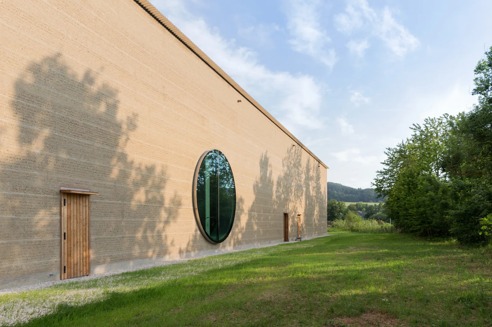
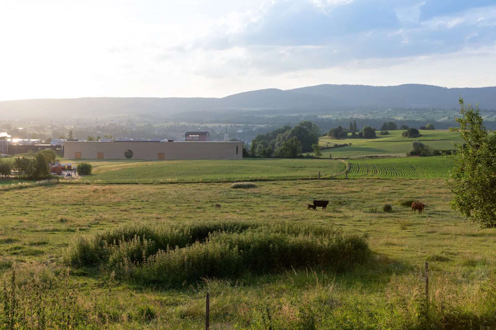
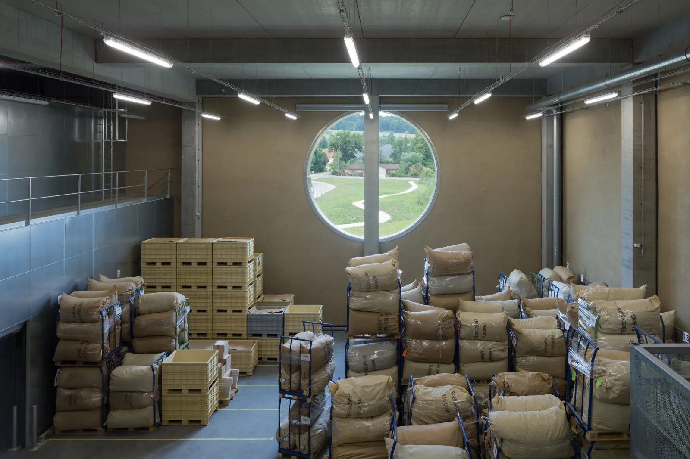
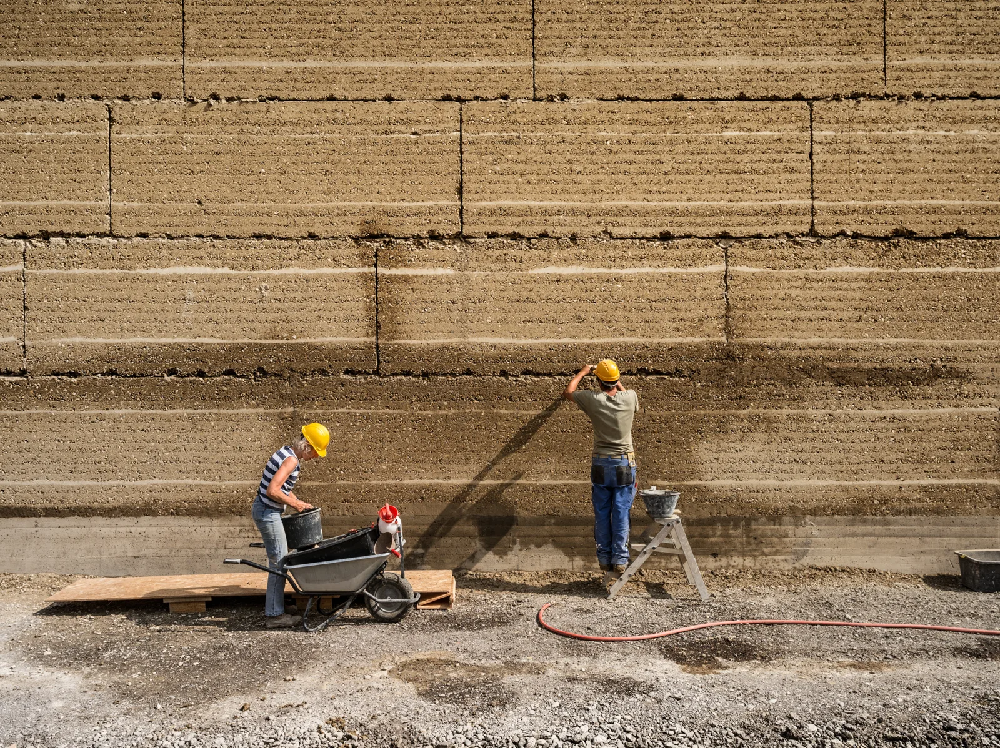
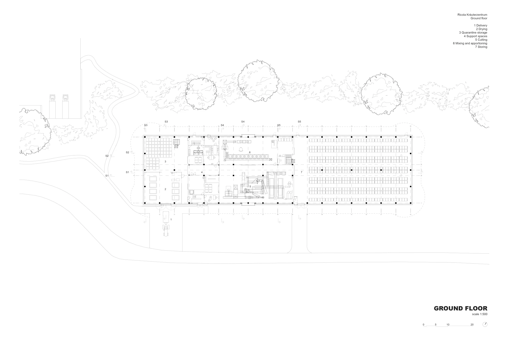
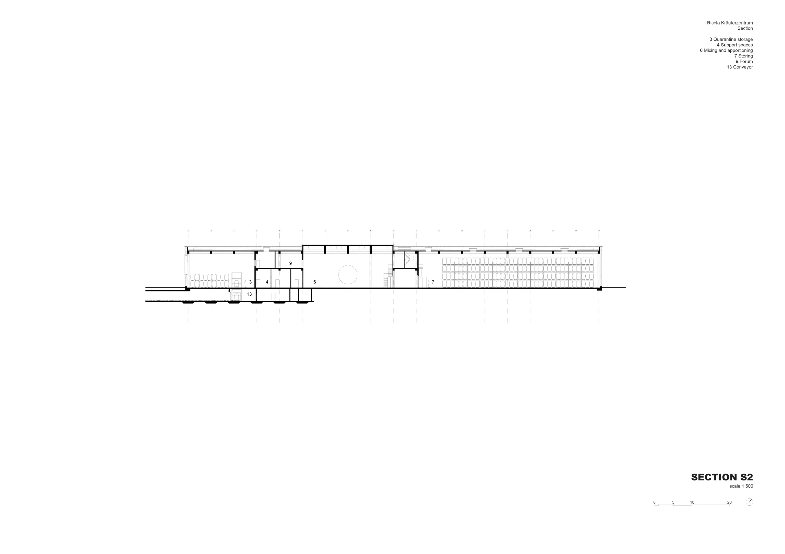

Production building · 2014
Ricola Kräuterzentrum
Herzog & de Meuron
Laufen, Switzerland
A production building for drying, cutting, blending and storing herbs, with a visitor centre overlooking the processing areas.
The facade uses prefabricated elements of locally sourced rammed earth, which helps regulate humidity. It is distinct from the internal concrete loadbearing structure: material character and environmental performance are considered alongside the demands of production.


Relevant connections
MAKE
The building accommodates the industrial processing of herbs, from drying and cutting to blending and storage.
SHOW
The visitor centre allows people to observe and learn about herb processing.
Images and drawings / 06









